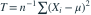
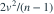
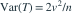

样本来自 ， 已知，参数 是方差。令
已知，参数 是方差。令
已知，参数 是方差。令 
。以下哪项给出 及其有效性？- A，未达到 C-R 下界
- B，达到 C-R 下界
- C

，达到 C-R 下界 - D，达到 C-R 下界
我已思考，展开答案与解析
正确答案：B
- ，故 且

。 - 每个观测关于 的信息量为 ，因而该无偏估计达到下界。
易错提醒均值已知时平方和没有损失一个自由度。
JYSG · 432精选 · 册内复旦大学432·2019年·六(1)；参数变换；PDF第35页（印刷页33）
原题知识点延伸